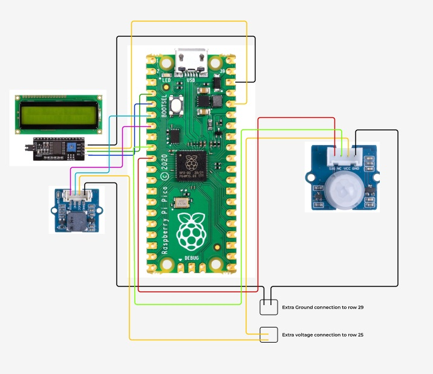

Runner Up
Runner Up
Emotion Player
This emotion detector uses a custom dataset and the final result is a hue bar where the final user can see the emotions shown during the duration of the clip. Based on EmotionCLIP.
Check Repo

Security Alarm System
This project is an alarm system designed for the IoT course of the University of Oulu, using MQTT protocol and Hive for https display. A Raspberry Pi Pico HW is required and other components like an LCD screen.
Check Repo
Current work involves wireframing, research and database management and other machine learning projects.
See Projects